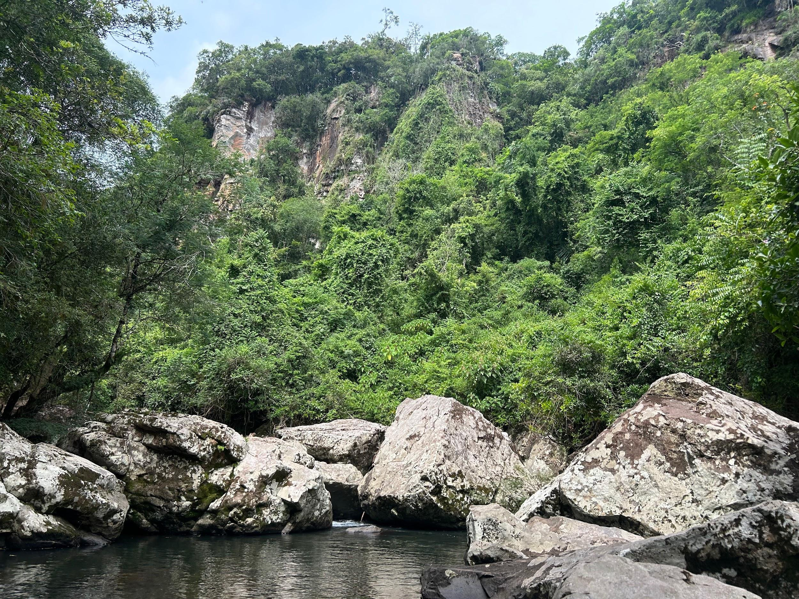

O Perau localiza-se próximo à Estr. Padilha Velha, e para chegar a este
encantador local, os turistas necessitam percorrer uma trilha de aproximadamente 7
minutos. O nome "Perau" deriva da presença de um perau que circunda a área,
criando uma atmosfera única e pitoresca. Além disso, o local é caracterizado por um
rio com grandes pedras, que agrega ainda mais beleza e charme ao cenário natural.
 - fundo verde.png)